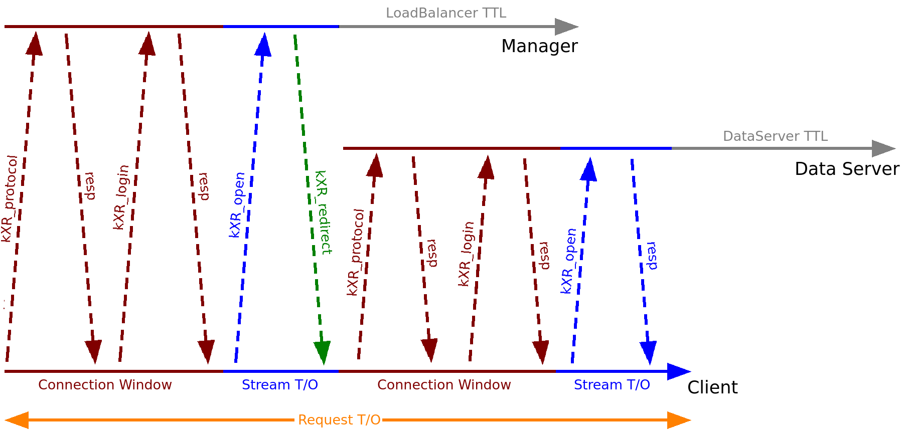

This document describes the client (XrdCl) component of XRootD framework. In particular it focuses on configuration options of the client (configuration file, environment variables, parameters) and on how they interact with each other.
XrdCl is a multi-threaded C++ implementation of XRootD client based on an event-loop, and is provided by the libXrdCl library. The standard C++ API is documented here and is out of the scope of this document. The XrdCl implementation is fully asynchronous (all the synchronous calls have been implemented in terms of their asynchronous counterparts). All issued requests are queued and sequentially processed by a single-threaded socket event-loop (however in order to increase performance it is possible to employ more than one event-loop). Also, all incoming responses are processed by the event-loop, however all the response handlers are executed in a thread-pool. The behavior of XrdCl can be tuned using a configuration file, environment variables or XrdCl::DefaultEnv utility.
Low level connection handling is hidden from the user. Once a request is issued a connection between the client and the server will be established automatically, the connection will be kept alive for further reuse until TTL timeout elapses. By default XrdCl is multiplexing all request through a single physical connection, however it is possible to force the component to use multiple physical connections (up to 16) in order to increase the performance over WAN networks. It is also possible to force XrdCl to disconnect from a server (e.g. in order to reestablish the connection with a new credential). When the connection between client and server is being established the server may request the client to authenticate (if so, the server will send a list of acceptable authentication methods, e.g. krb5, gsi, etc.).
The XrdCl library is the base for following components: the command line interface (xrdcp and xrdfs), python bindings, SSI client and the Posix API.
In addition, this document, in the last section, describes the new declarative client API introduced in version 4.9.0.
This section describes the XRootD client configuration file. By default XRootD client
will use the global config file: /ets/xrootd/client.conf. However, those settings migh be
overwritten by the user specific config file: ~/.xrootd/client.conf and Environment
Variables. For the complete list of configurable parameters please consult the Index of
Environment Variables.
XRootD client supports protocol- and endpoint-level plug-ins. By convention a single
config file is expected per plug-in, as they are discovered and configured by scanning
configuration files. The plug-in manager will search for configuration files
in:
An XRootD client plug-in configuration file should a contain following key-value pairs:
For example the following config file defines a plug-in for host.domain.edu endpoint (root protocol is being assumed) and http protocol:
xrdcp [options] source destination
DESCRIPTION
The xrdcp utility copies one or more files from one location to another. The data
source and destination may be a local or remote file or directory. Additionally, the
data source may also reside on multiple servers.
OPTIONS
-C | --cksum type [:value |print |source]
Obtains the checksum of type (i.e. adler32, crc32, or md5) from the source,
computes the checksum at the destination, and verifies that they are the
same. If a value is specified, it is used as the source checksum. When print
is specified, the checksum at the destination is printed but is not verified.
-d | --debug lvl
Debug level: 1 (low), 2 (medium), 3 (high).
-F | --coerce
Ignores locking semantics on the destination file. This option may lead to file
corruption if not properly used.
-f | --force
Re-creates a file if it is already present.
-h | --help
Displays usage information.
-H | --license
Displays license terms and conditions.
-N | --nopbar
Does not display the progress bar.
-P | --posc
Requests POSC (persist-on-successful-close) processing to create a new file. Files are
automatically deleted should they not be successfully closed.
-D | --proxy proxyaddr:proxyport [NOT YET IMPLEMENTED]
Use proxyaddr:proxyport as a SOCKS4 proxy. Only numerical addresses are
supported.
-r | --recursive
Recursively copy all files starting at the given source directory.
--server
Runs as if in a server environment. Used only for server-side third party copy
support.
-s | --silent
Neither produces summary information nor displays the progress bar.
-y | --sources num
Uses up to num sources to copy the file.
-S | --streams num
Uses num additional parallel streams to do the transfer. The maximum value is 15.
The default is 0 (i.e., use only the main stream).
--tpc [delegate] first | only
Copies the file from remote server to remote server using third-party-copy protocol
(i.e., data flows from server to server). The source and destination servers must
support third party copies. Additional security restrictions may apply and may cause
the copy to fail if they cannot be satisfied. Argument ’first’ tries tpc and if it fails,
does a normal copy; while ’only’ fails the copy unless tpc succeeds. When
’delegate’ is specified, the copy delegates the command issuer’s credentials
to the target server which uses those credentials to authenticate with the
source server. Delegation is ignored if the target server is not configured to
use delegated credentials. Currently, only gsi credentials can be delegated.
-v | --verbose
Displays summary output.
-V | --version
Displays version information and immediately exits.
-z | --zip file
Copy given file from a ZIP archive (same as xrdcl.unzip opaque info).
-X | --xrate rate [NOT YET IMPLEMENTED]
Limits the copy speed to the specified rate. The rate may be qualified with the letter
k, m, or g to indicate kilo, mega, or giga bytes, respectively. The option only applies
when the source or destination is local.
-Z | --dynamic-src
File size may change during the copy.
-I | --infiles fn
Specifies the file that contains a list of input files.
-p | --path
Automatically create remote destination path.
--parallel n
Number of copy jobs to be run simultaneously.
--allow-http
Allow HTTP as source or destination protocol. Requires the XrdClHttp client plugin.
LEGACY OPTIONS
Legacy options are provided for backward compatability. These are now deprecated
and should be avoided.
-adler
Equivalent to ”–cksum adler32:source”.
-DI pname numberval
Set the internal parameter pname with the numeric value numberval.
-DS pname stringval
Set the internal parameter pname with the string value stringval.
-md5
Equivalent to ”–cksum md5:source”.
-np
Equivalent to ”–nopbar”.
-OD cgi
Add cgi information cgi to any destination xrootd URL. You should specify the
opaque information directly on the destination URL.
-OS cgi
Add cgi information cgi to any source xrootd URL.
-x
Equivalent to ”–sources 12”.
OPERANDS
source: a dash (i.e. -) indicating stanard in, a local file, a local directory name suffixed by /, or an xrootd URL in the form of:
xroot:// [user@] host [:port] /absolutepath
The absolutepath can be a directory.
destination: a dash (i.e. -) indicating stanard out, a local file, a local directory name suffixed by /, or an xrootd URL in the form:
xroot:// [user@] host [:port] /absolutepath
The absolutepath can be a directory.
xrdfs [–no-cwd] host[:port] [command [args]]
DESCRIPTION
The xrdfs utility executes meta-data oriented operations (e.g., ls, mv, rm, etc.)
on one or more xrootd servers. Command help is available by invoking xrdfs with no
command line options or parameters and then typing ”help” in response to the input
prompt.
OPTIONS
–no-cwd
No CWD is being preset in interactive mode.
COMMANDS
chmod path <user><group><other>
Modify permissions of the path. Permission string example: rwxr-x–x
ls [-l] [-u] [-R] [dirname]
Get directory listing.
-l stat every entry and pring long listing
-u print paths as URLs
-R list subdirectories recursively
-D show duplicate entries
locate [-n] [-r] [-d] <path>
Get the locations of the path.
-r refresh, don’t use cached locations
-n make the server return the response immediately (it may be incomplete)
-d do a recursive, deep locate in order to find data servers
-m prefer host names to IP addresses
-i ignore network dependencies (IPv6/IPv4)
mkdir [-p] [-m<user><group><other>] <dirname>
Creates a directory/tree of directories.
-p create the entire directory tree recursively
-m<user><group><other> permissions for newly created directories
mv <path1> <path2>
Move path1 to path2 locally on the same server.
stat <path>
Get info about the file or directory.
-q query optional flag query parameter that makes xrdfs return error code
to the shell if the requested flag combination is not present; flags may be
combined together using ’|’ or ’&’ Available flags: XBitSet, IsDir, Other,
Offline, POSCPending, IsReadable, IsWriteable
statvfs <path>
Get info about a virtual file system.
query <code> <params>
Obtain server information. Query codes:
config <what> Server configuration; <what> is one of the following:
checksumcancel <path> File checksum cancelation
checksum <path>File checksum
opaque <arg> Implementation dependent
opaquefile <arg> Implementation dependent
space <space> Logical space stats
stats <what> Server stats; <what> is a list of letters indicating informationto be returned:
xattr <path> Extended attributes
rm <filename>
Remove a file.
rmdir <dirname>
Remove a directory.
truncate <filename> <length>
Truncate a file.
prepare [-c] [-f] [-s] [-w] [-p priority] filenames
Prepare one or more files for access.
cat [-o localfile] file
Print contents of a file to stdout
-o print to the specified local file
tail [-c bytes] [-f] file
Output last part of files to stdout.
-c num˙bytes out last num˙bytes -f output appended data as file grows
spaceinfo path
Get space statistics for given path.
This section describes XRootD client environment variables. The following list of environment variables applies to xrdcp, xrdfs any other application using the libXrdCl library, unless specified otherwise.
| Limits/Performance: |
|
| Logging: |
|
| Metalinks: |
|
| Monitoring: |
|
| Networking: |
|
| Plug-in: |
|
| Recovery: |
|
| TCP: |
|
| Timeouts: |
|
| XrCl::CopyProcess / xrdcp: |
|
| Others: |
|
Override the application name reported to the server.
Default: disabled
Path to the client monitor library.
Default: disabled
Additional optional parameters that will be passed to the monitoring object on
initialization.
Default: disabled
A time window for the connection establishment. A connection failure is declared if
the connection is not established within the time window. If a connection failure
happens earlier then another connection attempt will only be made at the beginning
of the next window.
Default: 120 (seconds)
Number of connection attempts that should be made (number of available connection
windows) before declaring a permanent failure.
Default: 5
Size of a single data chunk handled by xrdcp / XrdCl::CopyProcess.
Default: 16KiB
Maximum time allowed for the copy process to initialize, ie. open the source and
destination files.
Default: 600 (seconds)
Maximum number of asynchronous requests being processed by the xrdcp /
XrdCl::CopyProcess command at any given time.
Default: 4
Maximum time allowed for a third-party copy operation to finish.
Default: 1800 (seconds)
Time period after which an idle connection to a data server should be closed.
Default: 300 (seconds)
The redirector will be used as a last resort if the GLFN tag is specified in a Metalink
file.
Default: none
Time period after which an idle connection to a manager or a load balancer should
be closed.
Default: 1200 (seconds)
Enable/Disable local Metalink file processing (by convention the following URL
schema has to be used: root://localfile//path/filename.meta4) The localfile
semantic is now deprecated, use file://localhost/path/filename.meta4 instead!
Default: 0
If set, the diagnostics will be printed to the specified file instead of stderr.
Default: disabled
Determines the amount of diagnostics that should be printed. Valid values are:
Dump, Debug, Info, Warning, and Error.
Default: disabled
Determines which diagnostics topics should be printed at all levels. It’s a ”|” separated list of topics. The first element may be “All” in which case all the topics are enabled and the subsequent elements may turn them off, or ”None” in which case all the topics are disabled and the subsequent flags may turn them on. If the topic name is prefixed with ”ˆ”, then it means that the topic should be disabled. If the topic name is not prefixed, then it means that the topic should be enabled.
The log mask may as well be handled for each diagnostic level separately by setting one or more of the following variables: XRD˙LOGMASK˙ERROR, XRD˙LOGMASK˙WARNING, XRD˙LOGMASK˙INFO, XRD˙LOGMASK˙DEBUG, and XRD˙LOGMASK˙DUMP.
Available topics: AppMsg, UtilityMsg, FileMsg, PollerMsg, PostMasterMsg,
XRootDTransportMsg, TaskMgrMsg, XRootDMsg, FileSystemMsg, AsyncSockMsg
Default: The default for each level is ”All”, except for the Dump level, where the
default is ”All| ˆPollerMsg”. This means that, at the Dump level, all the topics
but ”PollerMsg” are enabled.
The maximum time in seconds a client can be stalled by the server if a Metalink
redirector is available.
Default: 60 (seconds)
Enable/Disable Metalink processing.
Default: 1
The network stack that the client should use to connect to the server. Possible values are:
Default: IPAuto
Disables the Nagle algorithm if set to 1 (default), enables it if set to 0.
Default: 1
Determines if open recovery should be enabled or disabled for mutable (truncate or
create) opens.
Default: true
The number of event loops.
Default: 1
A default client plug-in to be used.
Default: none
A custom location containing client plug-in config files.
Default: none
A comma separated list of poller implementations in order of preference.
Default: built-in
If set the client tries first IPv4 address (turned off by default).
Default: 0
Determines if read recovery should be enabled or disabled.
Default: true
Maximum number of allowed redirections.
Default: 16
Default value for the time after which an error is declared if it was impossible to get
a response to a request.
Default: 1800 (seconds)
Determines whether the fork handlers should be enabled, making the API fork safe.
Default: 0
Time after which the permanent failure flags are cleared out and a new connection
may be attempted if needed.
Default: 1800
Default value for the time after which a connection error is declared (and a recovery
attempted) if there are unfulfilled requests and there is no socket activity or a
registered wait timeout.
Default: 60 (seconds)
Number of streams per session.
Default: 1
Enable/Disable the TCP keep alive functionality.
Default: 0
Interval between subsequent keepalive probes (Linux only).
Default: 75
Number of unacknowledged probes before considering the connection dead (Linux
only).
Default: 9
Time between last data packet sent and the first keepalive probe (Linux only).
Default: 7200
Resolution for the timeout events. Ie. timeout events will be processed only every
XRD˙TIMEOUTRESOLUTION seconds.
Default: 15 (seconds)
Number of threads processing user callbacks.
Default: 3
Determines if write recovery should be enabled or disabled.
Default: true
Maximu size of a data block assigned to a single source in case of an extreme copy
transfer.
Default: 128MiB
The ConnectionWindow parameter is applied during client-server connection and controls two aspects of this process:
Let us illustrate all this with following example. Suppose XRootD client wants to connect to a server with three physical IP address (2x IPv6 and 1x IPv4). For the sake of argument let us suppose it will fail after 60s during the hand-shake procedure, while connecting to the 1st IPv6 address. What will happen next? Since there are two more addresses available, the client will immediately proceed to the next one. Now let us suppose that the cumulative time spent on establishing the physical connection and on carrying out the hand-shake exceeded 120s (nominal value of ConnectionWindow). In this case the second connection attempt will be timed out, and XRootD client will proceed to the 3rd IP address. Again, let us suppose that similarly as in case of the 1st IP address the connection failed after 60s. Since there are no more address to try, the client will have to wait until the end of the current ConnectionWindow (that is for another 60s) before the connection procedure can be restarted. Now how all this relates to the ConnectioRetry? The nominal value of ConnectioRetry is 5, which means we can retry the whole procedure four more times (Note: ConnectionRetry is not applied per single physical connection but rather to the whole connection procedure).
The StreamTimeout parameter is applied during every request/response exchange
after the client and the server established a connection. It defines the maximum
length of time that may elapse between the moment when the client has sent a
request and the moment when the client has received a response for the request in
question. If the time spent waiting for response from the server exceeds the
StreamTimeout an error is declared (and the client will disconnect form the server).
There are two exceptions to the above stated rule:
The StreamErrorWindow controls the length of time that needs to elapse after a fatal error before the client may attempt to reconnect to the server. A fatal error is declared eg. if the host name cannot be resolved, a low level Posix system call fails (eg. connect/fcntl/epool), or client runs out of connection retries.
The RequestTimeout parameter is applied to a logical XRootD operation (eg.
opening a file, listing directory, etc.) as a whole. It is the maximum length of time
that may elapse from the moment an operation has been issued using XRootD client
API until it has been resolved (no matter how many underlying requests it will
trigger). If the RequestTimeout is exceeded an error is declared and the operation is
resolved as failed.
Note: The value of this parameter might be overwritten directly by the user of
XRootD client API by setting the timeout argument.
A Time To Live (TTL) timeout controls the lifetime of an idle physical connection. If for the given communication channel the time length elapsed from last exchange of request/response between the client and server exceeds the TTL timeout the given connection will be terminated. There are two types of TTL timeouts in XRootD client:
Let us now consider an example in order to illustrate how all those timeouts play along (for clarity please consult the diagram below). Suppose that an XrdCl::File::Open(…) operation is being called and that there is no open connection between the client and the server. The client will have to establish the XRootD connection first (subject to ConnectionWindow):
Subsequently, the client will issue a kXR˙open request (subject to StreamTimeout).
Let us suppose that the server will respond with a kXR˙redirect redirecting the client
to a data server. In this case, the client will have to open another XRootD connection
(again, subject to ConnectionWindow) and then send an open request (again,
subject to StreamTimeout). Finally, once the server responds, the open operation
will be resolved. The whole process described in the scenario above is subject to
RequestTimeout.
Once the connections to the manager and data server become idle they will be
subject to respective TTL timeouts.

The CPInitTimeout parameter is applied during initialization of a Third-Party-Copy
(TPC) transfer. It defines the maximum length of time that may elapse
until TPC transfer has been initialized (ie. open destination, open source,
issue sync, for more details please consult the TPC Protocol Reference).
The CPTPCTimeout parameter defines the maximum length of time that may elapse
between the moment when the actual transfer has been started and the moment
when it is finished (ie. it is applied to the second sync, for more details please consult
the TPC Protocol Reference).
This section describes XRootD client declarative API introduced in version 4.9.0. For the standard XrdCl::File and XrdCl::FileSystem API please consult our Doxygen documentation. Similarly as the standard XrdCl API, the declarative API allows to issue File and FileSystem operations, however its sole focus is on facilitating the asynchronous programing model and chaining of operations. Also, the new API has been designed to be more in line with modern C++ programming practices (see example below).
There are several utilities for facilitating composition of operations:
Returns: std::future<XrdCl::XRootDStatus>
Returns: XrdCl::XRootDStatus.
Consider following example of reading a whole file of unknown size:
In lines 2-3 we declare forwardable size and buffer arguments. In the pipeline we first issue an open, which we handle with a lambda (open returns also stat information). Inside of the lambda (lines 11-12) we set the values of size and buffer. In the subsequent Read (line 14) operation we use the size and buffer although they values will be only set once we get the response for the preceding Open.
The declarative API supports following handlers: XrdCl::ResponseHandler, functions, function objects, lambdas, std::future and std::package˙task (consult the list below for respective examples). Each operation defines its response type (see List of Operations) that should be used when constructing a respective handler for the operation.
Operations can be pipelined using operator|. In order to illustrate the pipelining semantics we will consider following scenario: suppose one wants to read 1KB form a files, however the prerequisite for reading is creating a lock file. Now let us consider following code:
In lines 6-7 the lock file is being created. Afterwards, in lines 8-10 the pipeline continues: it does an open, a read and a close on the actual file. Finally, in line 11 the lock file is being deleted. Note that if an operation on the pipeline fails subsequent operations in the pipeline wont be executed, however their handlers will be called with an error status of errPipelineFailed (in order to allow for a clean up if necessary). Using the pipelining API makes the source code more coherent and the control flow more explicit.
There are two types of operations: the XrdCl::File operations and XrdCl::FileSys-tem operations. Each operation has a well defined set of arguments, however any argument might be lifted to a std::future or a XrdCl::Fwd. It is possible (but not mandatory) to specify a handler for each operation using the streaming operator (operator>>). All Operations are non-copyable objects (move only).
All arguments of any File Operation (except for the XrdCl::File object itself) are liftable to XrdCl::Fwd and std::future.
Signature:
Arguments (remaining):
Operation status: XRootDStatus
Response:
Signature:
Arguments (remaining):
Operation status: XRootDStatus
Response: XrdCl::ChunkInfo
Signature:
Operation status: XRootDStatus
Response: void
Signature:
Arguments (remaining):
Operation status: XRootDStatus
Response: XrdCl::StatInfo
Signature:
Arguments (remaining):
Operation status: XRootDStatus
Response: void
Signature:
Operation status: XRootDStatus
Response: void
Signature:
Arguments (remaining):
Operation status: XRootDStatus
Response: void
Signature:
Arguments (remaining):
Operation status: XRootDStatus
Response: XrdCl::ChunkList
Signature:
Arguments (remaining):
Operation status: XRootDStatus
Response: void
Signature:
Arguments (remaining):
Operation status: XRootDStatus
Response: void
Signature:
Arguments (remaining):
Operation status: XRootDStatus
Response: XrdCl::Buffer
Signature:
Operation status: XRootDStatus
Response: XrdCl::Buffer
All arguments of any FileSystem Operation (except for the XrdCl::FileSystem object itself) are liftable to XrdCl::Fwd and std::future.
Signature:
Arguments (remaining):
Operation status: XRootDStatus
Response: LocationInfo
Signature:
Arguments (remaining):
Operation status: XRootDStatus
Response: LocationInfo
Signature:
Arguments (remaining):
Operation status: XRootDStatus
Response: void
Signature:
Arguments (remaining):
Operation status: XRootDStatus
Response: XrdCl::Buffer
Signature:
Arguments (remaining):
Operation status: XRootDStatus
Response: void
Signature:
Arguments (remaining):
Operation status: XRootDStatus
Response: void
Signature:
Arguments (remaining):
Operation status: XRootDStatus
Response: void
Signature:
Arguments (remaining):
Operation status: XRootDStatus
Response: void
Signature:
Arguments (remaining):
Operation status: XRootDStatus
Response: void
Signature:
Operation status: XRootDStatus
Response: void
Signature:
Arguments (remaining):
Operation status: XRootDStatus
Response: XrdCl::StatInfo
Signature:
Arguments (remaining):
Operation status: XRootDStatus
Response: XrdCl::StatInfoVFS
Signature:
Operation status: XRootDStatus
Response: XrdCl::ProtocolInfo
Signature:
Arguments (remaining):
Operation status: XRootDStatus
Response:XrdCl::DirectoryList
Signature:
Arguments (remaining):
Operation status: XRootDStatus
Response: XrdCl::Buffer
Signature:
Arguments (remaining):
Operation status: XRootDStatus
Response: XrdCl::Buffer